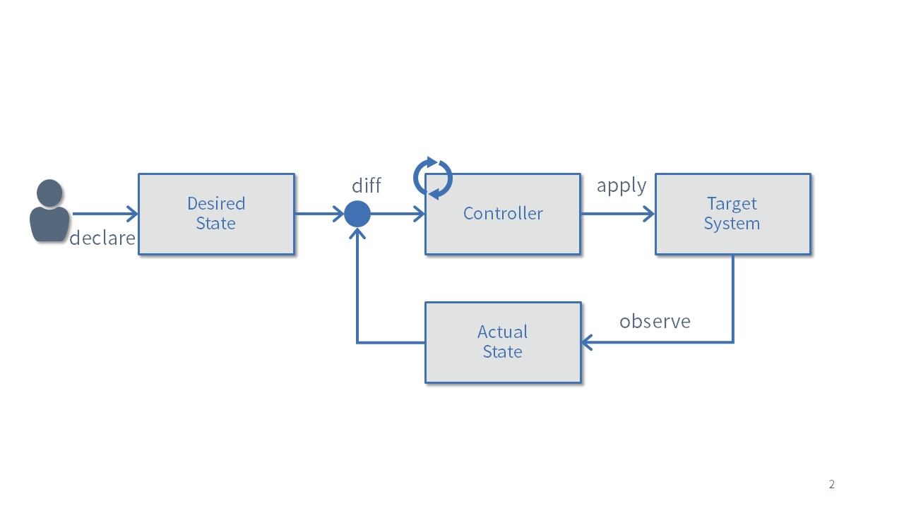
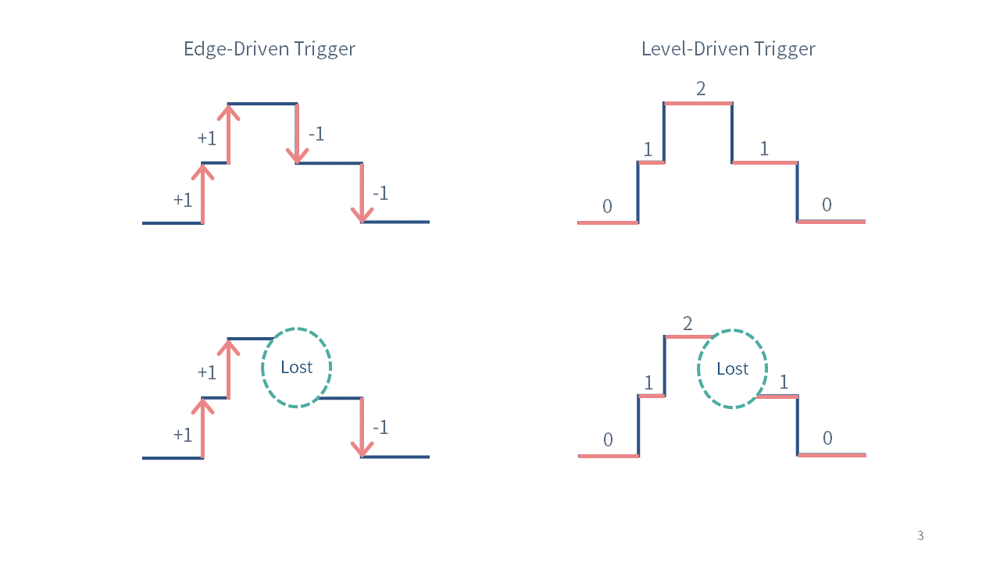

カスタムコントローラの基礎
ここではカスタムコントローラを開発する上で必要となるKubernetesの知識を簡単に説明します。
Declarative
Kubernetesにおいてもっとも重要なコンセプトがDeclarative(宣言的) APIです。
例えば、以下のようなYAMLフォーマットで記述されたマニフェストファイルを用意して、KubernetesのAPIサーバーに登録します。 この登録された情報のことをリソースと呼びます。
apiVersion: apps/v1
kind: Deployment
metadata:
name: sample
spec:
selector:
matchLabels:
app: httpd
replicas: 3
template:
metadata:
labels:
app: httpd
spec:
containers:
- name: httpd
image: quay.io/cybozu/testhttpd:0.1.0
kube-controller-managerと呼ばれるプログラムは、APIサーバ上にDeploymentリソースが登録されるとReplicaSetリソースをAPIサーバーに登録し、さらにReplicaSetリソースが登録されるとspec.replicasに指定された数のPodをAPIサーバーに登録します。
次にkube-schedulerというプログラムは、APIサーバ上にPodリソースが登録されると、Podを配置するノードを決定しPodの情報を更新します。
各ノードで動作しているkubeletというプログラムは、自分のノード名が記述されたPodリソースを見つけるとコンテナを立ち上げます。

またDeploymentリソースのspec.replicasの数を増やすと、それに合わせてPodも追加され新しくコンテナが起動されます。逆にspec.replicasを減らすとPodとコンテナも削除されます。
このようにKubernetesでは様々なプログラムAPIサーバーに登録された情報をもとに、システムがあるべき状態になるように調整していきます。
CRD(Custom Resource Definition)とCR(Custom Resource)
KubernetesにはDeploymentやPodを始めとしてたくさんの標準リソースが用意されています。 標準リソースだけでもある程度システムの構築は可能なもののの、より複雑なシステムを構築したい場合はリソースのカスタマイズがおこないたくなります。
そこで、Kubernetesの利用者が自由に新しいリソース(CR: Custom Resource)を利用するための仕組みが用意されています。
カスタムリソースを利用するためには、カスタムリソースの定義としてCRD(Custom Resource Definition)を用意する必要があります。 CRDでは下記のようにOpenAPI v3.0の形式でバリデーションを記述することが可能になっています。
カスタムコントローラ
あるリソースの状態をチェックして、それをあるべき姿に持っていこうとするプログラムのことをコントローラと呼びます。 先に紹介したkube-controller-managerは、PodコントローラやServiceコントローラなど、標準リソース用のコントローラの集合から構成されています。
一方で、ユーザーが定義したカスタムリソースを対象としたコントローラのことをカスタムコントローラと呼びます。
カスタムコントローラを実装する上で重要な考え方を以下に紹介します。
Reconciliation Loop
Reconciliation Loopは、コントローラのメインロジックです。 あるべき理想の状態と現在の状態を比較し、その差分がなくなるように調整する処理を実行し続けます。

リソースが新しく登録されたり、編集されたり、監視対象のシステムの状態が変更するなどの何らかのイベントが発生すると、Reconciliation Loopは呼び出されます。
冪等
Reconciliation Loopは冪等性を備えていなければなりません。
先ほど例に上げたPodコントローラを考えてみましょう。 このコントローラは、あるべき状態としてPodが3つだと宣言されていたら、Reconcileを何度呼ばれてもPodの数が3つになるようにしなければなりません。 Podが3つある状態でReconcileが呼び出されたときにさらに3つのPodをつくってしまったり、エラーを出してしまったりしてはいけないのです。
これは当たり前のことのように感じられるかもしれませんが、Kubernetes登場前のインフラ自動化ツールでは、冪等性を備えていないものもよく見かけられました。
エッジドリブントリガーとレベルドリブントリガー
Reconciliation Loopは、レベルドリブントリガーで動く必要があります。
エッジドリブントリガーとは状態の変化が発生した時点で処理を実行することで、レベルドリブントリガーとは状態を定期的にチェックして特定の条件に入ったときに処理を実行することです。(参考)

エッジドリブントリガー方式でコントローラを実装すると、もしイベントが発生したときにコントローラが起動していなかったりすると、そのトリガーが発動せず、あるべき状態と現在の状態がずれてしまうことになります。
基本的にKubebuilderを利用してコントローラを実装するとレベルドリブンになるのですが、状態のもたせ方によってはエッジドリブンになってしまうケースがあります。
例えばstatus.phaseフィールドで状態を保持し、その状態に応じて動作するコントローラを考えてみましょう。
最初にコントローラのReconcileが実行されたときには状態はAでした。
status:
phase: A
次にコントローラのReconcileが実行されたときには状態はCに変化しました。
status:
phase: C
このとき実際にはphaseはA->B->Cと変化したにも関わらず、Bに変化したときのイベントをコントローラが取りこぼしていると、正しく処理ができない可能性があります。
そこで上記のような状態の持たせ方はせずに、各状態のON/OFFをリストで表現すれば、Bに変化したことを取りこぼさずに必要な処理を実行させることが可能になります。
status:
conditions:
- type: A
status: True
- type: B
status: True
- type: C
status: False